Chapter 8: Nucleophilic substitution reactions
Contents
Chapter 8: Nucleophilic substitution reactions#

(Credit: https://www.flickr.com/photos/12567713@N00/)
Introduction
Dr. Tim Spector, Professor of Genetic Epidemiology at Kings College in London, knows a thing or two about twins. He should: as head of the Department of Twin Research at Kings College, Spector works with about 3500 pairs of identical twins, researching the influence of a person’s genetic blueprint on everything from how likely they are to be obese, to whether or not they hold religious beliefs, to what kind of person they fall in love with. Anyone who is a twin, or has ever known a pair of identical twins, can attest to how remarkably similar they are to each other, even in the rare cases of adopted twins raised in separate homes. Dr. Spector, however, has over the course of his research become much more interested in how they are different.
A recent article about Spector in the British newspaper The Guardian (June 1, 2013) begins with an introduction to two middle-aged twin sisters named Barbara and Christine, one of the pairs of twins in the Kings College study group. Although they were treated almost as a single person when growing up, with identical haircuts and clothes, the twins began to diverge in their teenage years as they gained the freedom to make their own choices. They began to dress quite differently, with Christine choosing much more conservative styles than Barbara. Christine describes herself as being self-conscious, while Barbara has always been more confident. Christine suffers from depression, but Barbara does not.
Given that they were born with the exact same DNA and were raised in the same home, where do these differences come from? In public debates about why people are the way they are, a catch phrase that often comes up is ‘nature vs. nurture’: people argue, in other words, about the relative influence of a person’s genes vs. the influence of their environment. In Barbara and Christine’s case, one would assume that the ‘nature’ is identical, and given that they grew up in the same house, the ‘nurture’ side of the equation should also be quite similar.
As it turns out, the ‘nature’ component may not be so identical after all. Based on his work with twins, Spector now thinks that subtle changes to Barbara’s and Christine’s DNA after conception - and indeed, throughout their lifetimes - may be a much more important determinant of their physical and psychological characteristics than was previously believed. As we age from infants to adulthood, some of our DNA bases are modified by methylation: in other words, a methyl (CH3) group replaces a hydrogen. In humans and other mammals, this mainly happens to cytosine (C) bases, while in bacteria it is mainly adenosine (A) bases which are methylated. The biomolecule that serves as the methyl group donor in both cases is called S-adenosyl methionine, or ‘SAM’ for short.
Methylation of cytosine:
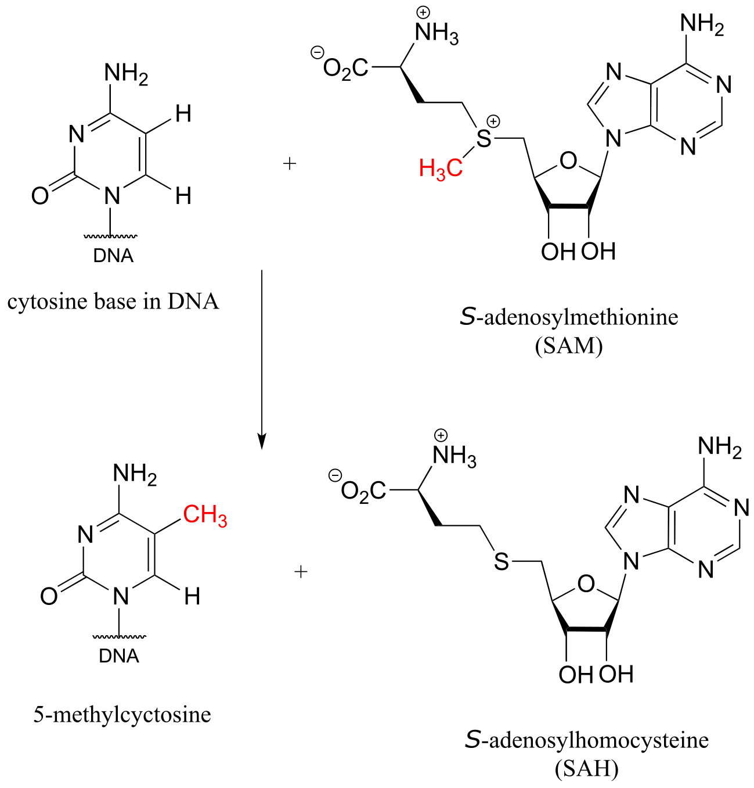
Methylation of adenine:
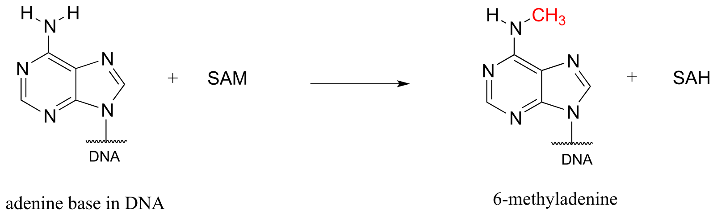
fig 1b
In mammals, gene methylation seems to occur in different patterns in different people - even in identical twins - in response to environmental factors. Methylation also seems to have the effect of amplifying or muting a gene’s function, by altering how it interacts with regulatory proteins. The combined effect of many gene methylation events can be profound, as groups of interrelated genes are ‘turned up’ or ‘turned down’ in concert. Professor Spector thinks that the many differences between Barbara and Christine probably stem, at least in part, from differences in how their genes have been methylated over the course of their lives so far.
In this chapter, we delve for the first time into ‘real’ organic reactions, beyond the simple proton transfer events of Bronsted acid-base reactions that we looked at in chapter 7. The methylation of DNA is an excellent example of a type of organic reaction called nucleophilic substitution, to which we were introduced briefly in chapter 6 as a model for learning about some of the fundamental concepts of organic reactivity. Now we will delve more deeply into three crucial players in this bond-forming and bond-breaking process: the nucleophile, the electrophile, and the leaving group. In doing so, we will get a chance to practice and refine our skills in drawing organic reaction mechanisms using the curved arrow formality, and we will think about what a transition state and a reactive intermediate of a reaction might look like, and how the structure of these species determines the regiochemical and stereochemical outcome of a nucleophilic substitution reaction. Perhaps, in the time spent working on this chapter, some of the cytosines in your DNA will undergo nucleophilic substitution reactions to become methylated - and who knows how this will influence who you go on to become?
Additional Reading:
Spector, Tim, 2013. Identically Different: Why We Can Change Our Genes. Overlook Hardcover. ISBN 978-1468306606
Section 8.1: Two mechanistic models for nucleophilic substitution#
As we begin our study of nucleophilic substitution reactions, we will focus at first on simple alkyl halide compounds. While the specific reactions we’ll initially consider do not occur in living things, it is nonetheless useful to start with alkyl halides as a model to illustrate some fundamental ideas that we must cover. Later, we will move on to apply what we have earned about alkyl halides to the larger and more complex biomolecules that are undergoing nucleophilic substitution right now in your own cells.
8.1A: The SN2 mechanism#
You may recall from our brief introduction to the topic in chapter 6 that there are two mechanistic models for how a nucleophilic substitution reaction can proceed. In one mechanism, the reaction is concerted: it takes place in a single step, and bond-forming and bond-breaking occur simultaneously. This is illustrated by the reaction between chloromethane and hydroxide ion:
An SN2 mechanism:
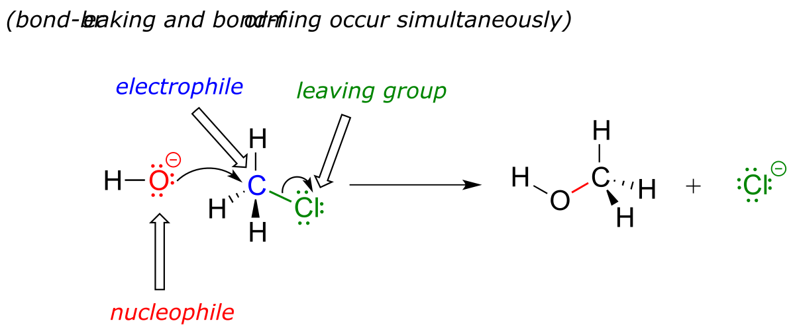fig 1
Recall that the hydroxide ion in this reaction is acting as a nucleophile (an electron-rich, nucleus-loving species), the carbon atom of chloromethane is acting as an electrophile (an electron-poor species which is attracted to electrons), and the chloride ion is the leaving group (where the name is self-evident).
Organic chemists refer to this mechanism by the term ‘SN2’, where S stands for ‘substitution’, the subscript N stands for ‘nucleophilic’, and the number 2 refers to the fact that this is a bimolecular reaction: the overall rate depends on a step in which two separate species collide. A potential energy diagram for this reaction shows the transition state (TS) as the highest point on the pathway from reactants to products.

The geometry of an SN2 reaction is specific: the reaction can only occur when the nucleophile collides with the electrophilic carbon from the opposite side relative to the leaving group. This is referred to as backside attack. Approach from the front side simply doesn’t work: the leaving group - which, like the nucleophile is an electron-rich group - blocks the way.

fig 2
The result of backside attack is that the bonding geometry at the electrophilic carbon inverts (turns inside-out) as the reaction proceeds.
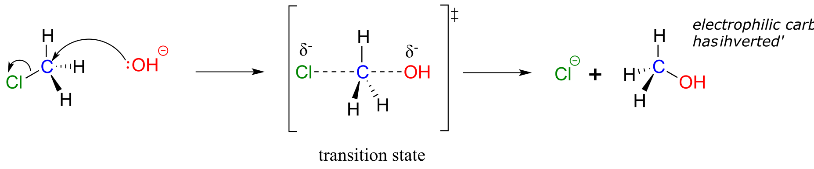fig 3
The transition state of the reaction is illustrated by drawing dotted lines to represent the covalent bonds that are in the process of breaking or forming. Because the formal charge on the oxygen nucleophile changes from negative one to zero as the reaction proceeds, and conversely the charge on the chlorine leaving group changes from zero to negative one, at the transition state both atoms are shown bearing a partial negative charge (the symbol δ-). One other drawing convention for transition states is to use brackets, with the double-dagger symbol in subscript.
Notice that the transition state for an SN2 reaction has trigonal bipyramidal geometry: the nucleophile, electrophile, and leaving group form a straight line, and the three substituents on carbon (all hydrogen atoms in this case) are arranged in the same plane at 120o angles.
Exercise 8.1: What is the measure in degrees) of the H-C-O angle in the SN2 transition state illustrated above?
Consider what would happen if we were to replace one of the hydrogen atoms in chloromethane with deuterium (the 2H isotope), and one with tritium (the radioactive 3H isotope). Now, because it has four different substituents, our carbon electrophile is a chiral center. We’ll arbitrarily assume that we start with the S enantiomer.

fig 4
As the hydroxide nucleophile attacks from the backside and the bonding geometry at carbon inverts, we see that the stereochemistry of the product reflects this inversion: we end up with the R enantiomer of the chiral product.
SN2 reactions proceed with inversion of stereochemical configuration at the electrophilic carbon.
video tutorial/animation: inversion of configuration during SN2 reactions
8.1B: The SN1 mechanism#
A second model for the nucleophilic substitution reaction is called the SN1 mechanism. The ‘1’ in SN1 indicates that the rate-determining step of the reaction is unimolecular: in other words, the rate-determining step involves a single molecule breaking apart (rather than two molecules colliding as was the case in the SN2 mechanism.)
In an SN1 mechanism the carbon-leaving group bond breaks first, before the nucleophile approaches, resulting in formation of a carbocation intermediate (step 1):
An SN1 mechanism:

fig 7
A carbocation is a powerful electrophile: because the carbon lacks a complete octet of valence electrons, it is ‘electron-hungry’. In step 2, a lone pair of electrons on the water nucleophile fills the empty p orbital of the carbocation to form a new bond.
Notice that this is actually a three-step mechanism, with a final, rapid acid-base step leading to the alcohol product.
A potential energy diagram for this SN1 reaction shows that each of the two positively-charged intermediate stages (I1 and I2 in the diagram) can be visualized as a valley in the path of the reaction, higher in energy than both the reactant and product but lower in energy than the transition states.

fig 7a
The first, bond-breaking step is the slowest, rate-determining step - notice it has the highest activation energy and leads to the highest-energy species (I1, the carbocation intermediate). Step 2 is rapid: a new covalent bond forms between a carbocation and and a water nucleophile, and no covalent bonds are broken. Recall from chapter 7 that Bronsted-Lowry proton transfer steps like step 3 are rapid, with low activation energies.
Hydrolysis
The nucleophilic substitution reactions we have seen so far are examples of hydrolysis. This term is one that you will encounter frequently in organic and biological chemistry. Hydrolysis means ‘breaking with water’: in a hydrolysis reaction, a water molecule (or hydroxide ion) participates in the breaking of a covalent bond. There are many reaction types other than nucleophilic substitution that can accurately be described as hydrolysis, and we will see several examples throughout the remaining chapters of this book.
Solvolysis is a more general term, used when a bond in a reagent is broken by a solvent molecule: usually, the solvent in question is water or an alcohol such as methanol or ethanol.
Exercise 8.2: Draw a mechanism for the SN1 solvolysis of tert-butyl chloride in methanol. What new functional group has been formed?
We saw that SN2 reactions result in inversion of stereochemical configuration at the carbon center. What about the stereochemical outcome of SN1 reactions? Recall that a carbocation is sp2-hybridized, with an empty p orbital perpendicular to the plane formed by the three sigma bonds:

fig 8
In the second step of an SN1 reaction, the nucleophile can attack from either side of the carbocation (the leaving group is already gone, and thus cannot block attack from one side like in an SN2 reaction).
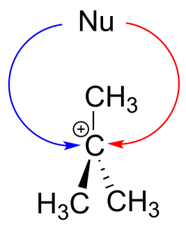
fig 9
Consider an SN1 reaction with a chiral tertiary alkyl chloride:

fig 10
Because the nucleophile is free to attack from either side of the carbocation electrophile, the reaction leads to a 50:50 mixture of two stereoisomeric products. In other words:
In general nonenzymatic SN1 reaction can occur with either retention or inversion of configuration at the electrophilic carbon, leading to racemization if the carbon is chiral.
For an example, consider the hydrolysis of (S)-3-chloro-3-methylhexane.

fig 11
The result of this (nonenzymatic) reaction is a racemic mixture of chiral alcohols.
It is important to remember, however, that enzymatic reactions are in almost all cases very specific with regard to stereochemical outcome. A biochemical SN1 reaction, as we shall see later, can result in either inversion or retention of configuration at the electrophilic carbon, but generally not a mixture of both: the two reactants are bound with specific geometry in the enzyme’s active site, so that the nucleophile can approach from one side only.
(The following exercises refer to nonbiological reactions)
Exercise 8.3:
a) Draw a complete mechanism for the hydrolysis reaction in the previous figure, showing all bond-breaking and bond-forming steps, and all intermediate species.
b) Draw structures representing TS1 and TS2 in the reaction. Use the solid/dash wedge convention to show three dimensions.
c) What is the expected optical rotation of the product mixture?
d) Could the two organic products be separated on a silica column chromatography?
Exercise 8.4:
a) Draw the product(s) of the hydrolysis of (R)-3-chloro-3-methyl heptane.
b) What can you predict, if anything, about the optical rotation of the product(s)?
c) Draw the product(s) of the hydrolysis of (3R,5R)-3-chloro-3,5-dimethyl heptane.
d) What can you predict, if anything, about the optical rotation of the product(s)?
Before we go on to look at some actual biochemical nucleophilic substitution reactions, we first need to lay the intellectual groundwork by focusing more closely on the characteristics of the three principal partners in the nucleophilic substitution reaction: the nucleophile, the electrophile, and the leaving group. In addition, we need to consider the carbocation intermediate that plays such a key role in the SN1 mechanism. For the sake of simplicity, we will continue to use simple, non-biological organic molecules and reaction examples as we work through the basic concepts.
Section 8.2: Nucleophiles#
8.2A: What is a nucleophile?#
A nucleophile is an atom or functional group with a pair of electrons (usually a non-bonding, or lone pair) that can be shared. The same, however, can be said about a base: in fact, bases can act as nucleophiles, and nucleophiles can act as bases. What, then, is the difference between a base and a nucleophile?
A Bronsted-Lowry base, as you will recall from chapter 7, uses a lone pair of electrons to form a new bond with an acidic proton. We spent much of chapter 7 discussing how to evaluate how basic a species is. Remember that when we evaluate basicity - the strength of a base - we speak in terms of thermodynamics: where does equilibrium lie in a reference acid-base reaction?

fig 12a
We will spend much of this section discussing how to evaluate how nucleophilic a species is - in other words, its nucleophilicity. A nucleophile shares its lone pair of electrons with an electrophile - an electron-poor atom other than a hydrogen, usually a carbon. When we evaluate nucleophilicity, we are thinking in terms of kinetics - how fast does the nucleophile react with a reference electrophile?

fig 12a
In both laboratory and biological organic chemistry, the most common nucleophilic atoms are oxygen, nitrogen, and sulfur, and the most common nucleophilic compounds and functional groups are water/hydroxide ion, alcohols, phenols, amines, thiols, and sometimes carboxylates.
In laboratory (non-biological) reactions, halide (I-, Br-, Cl-, F-) and azide (N3-) anions are also commonly seen acting as nucleophiles in addition to the groups mentioned above.
Carbon atoms can also be nucleophiles - enolate ions (section 7.6) are common carbon nucleophiles in biochemical reactions, while the cyanide ion (CN-) is just one example of a carbon nucleophile commonly used in the laboratory.
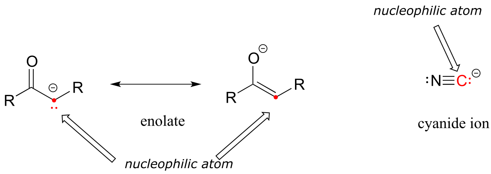
fig 12
Understanding carbon nucleophiles will be critical when we study, in chapters 12 and 13, the enzyme-catalyzed reactions in which new carbon-carbon bonds are formed in the synthesis of biomolecules such as DNA and fatty acids. In the present chapter, however, we will focus on heteroatom (non-carbon) nucleophiles.
Now, let’s consider a number of factors that influence how nucleophilic an atom or functional group is. We’ll start with protonation state.
8.2B: Protonation state#
The protonation state of a group has a very large effect on its nucleophilicity. A negatively-charged hydroxide ion is much more nucleophilic (and basic) than a water molecule. In practical terms, this means that a hydroxide nucleophile will react in an SN2 reaction with chloromethane several orders of magnitude faster than will a water nucleophile.
Likewise, a thiolate anion is more nucleophilic than a neutral thiol, and a neutral amine is nucleophilic, whereas an ammonium cation is not.
In a non-biological context, SN2 reactions tend to occur with more powerful, anionic nucleophiles, where the nucleophile can be thought of as actively displacing (‘pushing’) the leaving group off the carbon. SN1 reactions, in contrast, tend to be solvolysis reactions, with a weak, neutral nucleophile such as water or an alcohol.
8.2C: Periodic trends in nucleophilicity#
Just as with basicity, there are predictable periodic trends associated with nucleophilicity. Moving horizontally across the second row of the periodic table, the trend in nucleophilicity parallels the trend in basicity:
The horizontal periodic trend in nucleophilicity
more nucleophilic NH2- > OH- > F- less nucleophilic
more nucleophilic R-NH2 > R-OH less nucleophilic
Recall from section 7.3A that the basicity of atoms decreases as we move vertically down a column on the periodic table: thiolate ions are less basic than alkoxide ions, for example, and bromide ion is less basic than chloride ion, which in turn is less basic than fluoride ion. Recall also that this trend can be explained by considering the increasing size of the ‘electron cloud’ around the larger ions: the electron density inherent in the negative charge is spread around a larger volume, which tends to increase stability (and thus reduce basicity).
The vertical periodic trend for nucleophilicity is somewhat more complicated that that for basicity, and depends on the solvent in which the reaction is taking place. Take the general example of the SN2 reaction below:

fig 13
…where Nu- is one of the halide ions: fluoride, chloride, bromide, or iodide, and X is a common leaving group. If this reaction is occurring in a protic solvent (that is, a solvent that has a hydrogen atom bonded to an oxygen or nitrogen - water, methanol and ethanol are protic solvents), then the reaction will go fastest when iodide is the nucleophile, and slowest when fluoride is the nucleophile, reflecting the relative strength of the nucleophile.
**
**
The vertical periodic trend in nucleophilicity in water and other protic solvents
(opposite of the trend in basicity!)

fig 14
This is the opposite of the vertical periodic trend in basicity (section 7.3A), where iodide is the least basic. What is going on here? Shouldn’t the stronger base, with its more reactive unbonded valence electrons, also be the stronger nucleophile?
As mentioned above, it all has to do with the solvent. Remember, we are talking now about the reaction running in a protic solvent like water. Protic solvent molecules form strong noncovalent interactions with the electron-rich nucleophile, essentially creating a ‘solvent cage’ of hydrogen bonds:
artwork needed
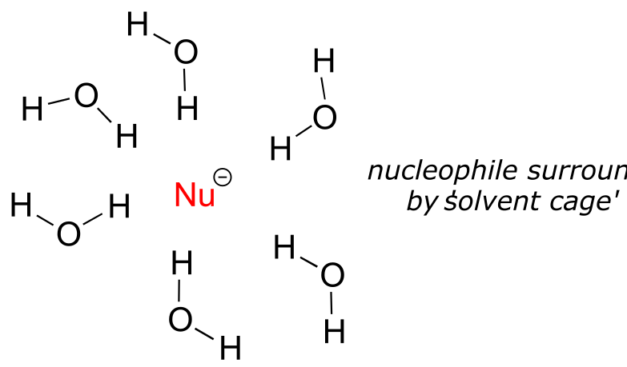
fig 16
For the nucleophile to attack in an SN2 reaction, the nucleophile-solvent hydrogen bonds must be disrupted - in other words, the nucleophilic electrons must ‘escape through the bars’ of the solvent cage. A weak base like iodide ion interacts weakly with the protons of the solvent, so these interactions are more readily disrupted. Furthermore, because the valence electrons on iodide ion are far from the nucleus, the electron cloud is polarizable - electron density can readily be pulled away from the nucleus, through the solvent cage and toward the electrophile.
A smaller, more basic anion such as fluoride is more highly shielded by stronger interactions with the solvent molecules. The electron cloud of the fluoride ion is smaller and much less polarizable than that of an iodide ion: in water solvent, the larger iodide ion is a more powerful nucleophile than the smaller fluoride ion.
The above discussion of the vertical periodic trend in nucleophilicity applies to biochemical reactions, because the biological solvent is water. The picture changes for laboratory reactions if we switch to a polar aprotic solvent, such as acetone, which is polar enough to solvate the polar and ionic compounds in the reaction but is not a hydrogen bond donor, and does not form a strong ‘solvent cage’ like water does. In acetone and other polar aprotic solvents, the trend in nucleophilicity is the same as the trend in basicity: fluoride is the strongest base and the strongest nucleophile.
Structures of some of the most common polar aprotic solvents are shown below. These solvents are commonly used in laboratory nucleophilic substitution reactions.
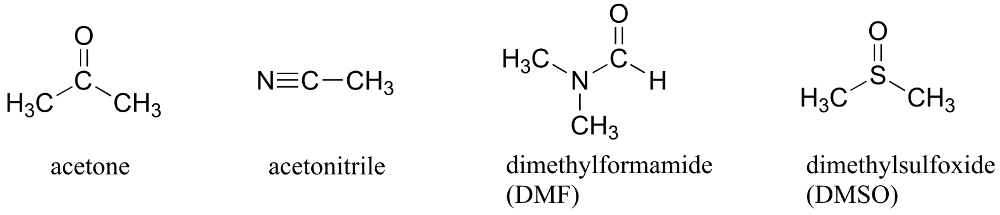
fig 17
In biological chemistry, the most important implication of the vertical periodic trend in nucleophilicity is that thiols are more nucleophilic than alcohols. The thiol group in a cysteine amino acid residue, for example, is more nucleophilic than the alcohol group on a serine, and cysteine often acts as a nucleophile in enzymatic reactions. The thiol group on coenzyme A is another example of a nucleophile we will see often in enzymatic reactions later on. Of course, reactions with oxygen and nitrogen nucleophiles are widespread in biochemistry as well.
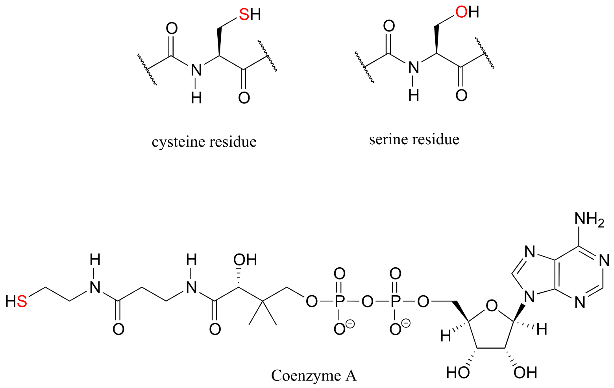
fig 18
8.2D: Resonance effects on nucleophilicity#
Resonance effects also come into play when comparing the inherent nucleophilicity of different molecules. The reasoning involved is the same as that which we used to understand resonance effects on basicity (see section 7.3B). If the electron lone pair on a heteroatom is delocalized by resonance, it is inherently less reactive - meaning less nucleophilic, and also less basic. An alkoxide ion, for example, is more nucleophilic and more basic than a carboxylate group, even though in both cases the nucleophilic atom is a negatively charged oxygen. In an alkoxide, the negative charge is localized on a single oxygen, while in the carboxylate the charge is delocalized over two oxygen atoms by resonance.
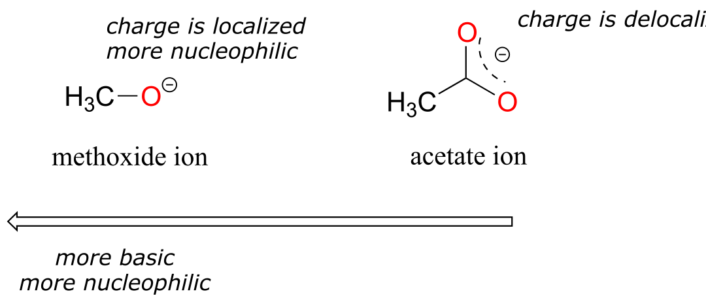
fig 19
The nitrogen atom on an amide is less nucleophilic than the nitrogen of an amine, due to the resonance stabilization of the nitrogen lone pair provided by the amide carbonyl group.

fig 20
Exercise 8.5: Which amino acid has the more nucleophilic side chain - serine or tyrosine? Explain.
8.2E: Steric effects on nucleophilicity#
Steric hindrance is an important consideration when evaluating nucleophility. For example, tert-butanol is less potent as a nucleophile than methanol. The comparatively bulky methyl groups on the tertiary alcohol effectively block the route of attack by the nucleophilic oxygen, slowing the reaction down considerably (imagine trying to walk through a narrow doorway while carrying three large suitcases!).
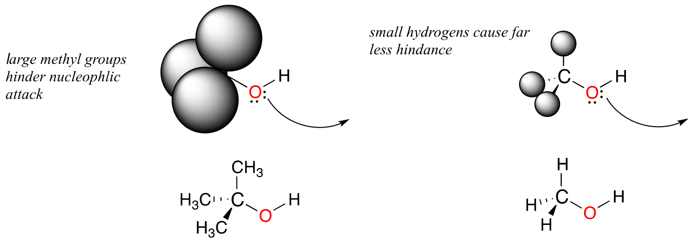
fig 21
A final note: when it comes to comparing the rate of nucleophilic substitution reactions, the strength of the nucleophile only matters for SN2 reactions. It is irrelevant for SN1 reactions, because the rate-determining step (when the leaving group departs and a carbocation intermediate forms) does not involve the nucleophile.
Exercise 8.6: Which is the better nucleophile - a cysteine side chain or a methionine side chain? A serine or a threonine? Explain.
Exercise 8.7: In each of the following pairs of molecules/ions, which is expected to
react more rapidly with CH3Cl in acetone solvent? Explain your choice.
a) phenolate (deprotonated phenol) or benzoate (deprotonated benzoic acid)?
b) water or hydronium ion?
c) trimethylamine or triethylamine?
d) chloride anion or iodide anion?
e) CH3NH- or CH3CH2NH2?
f) acetate or trichloroacetate?
g) aniline or 4-methoxyaniline?
h) phenolate or 2,6-dimethylphenolate?
Section 8.3: Electrophiles and carbocation stability#
Next, we turn to electrophiles. In the vast majority of the nucleophilic substitution reactions you will see in this and other organic chemistry texts, the electrophilic atom is a carbon bonded to an electronegative atom, usually oxygen, nitrogen, sulfur, or a halogen. The concept of electrophilicity is relatively simple: an electron-poor atom is an attractive target for something that is electron-rich, i.e. a nucleophile. However, we must also consider the effect of steric hindrance on electrophilicity.
8.3A: Steric hindrance at the electrophile#
One of the most important factors to consider when looking at the electrophile in a nucleophilic substitution reaction is steric hindrance. Consider two hypothetical SN2 reactions: one in which the electrophile is a methyl carbon and another in which it is tertiary carbon.
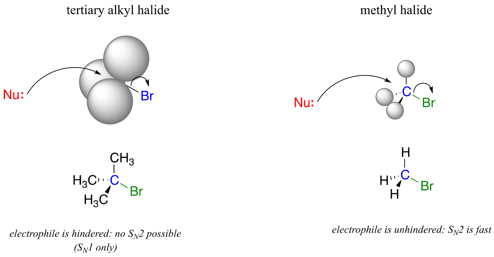
fig 22
Because the three substituents on the methyl electrophile are hydrogen atoms, the nucleophile has a relatively clear path for backside attack, and the SN2 reaction will take place readily. However, backside attack on the tertiary carbon electrophile is blocked by the bulky methyl groups, preventing access to the site of electrophilicity.
SN2 reactions occur at methyl, primary, and secondary carbon electrophiles. The degree of steric hindrance determines relative rates of reaction: unhindered methyl electrophiles react fastest, and more hindered secondary carbon electrophiles react slowest, assuming all other reactions conditions are identical. SN2 reactions do not occur to an appreciable extent at tertiary carbon electrophiles.

fig 22a
Exercise 8.8: Which would be expected to react more rapidly in an SN2 reaction with an azide ion (N3-) nucleophile in acetone solvent: 1-bromo-2,2-dimethylbutane or 1-bromo-3-methylbutane?
What about the SN1 pathway? Steric hindrance around the electrophilic carbon is not a significant factor in slowing down an SN1 reaction. This makes perfect sense from a geometric point of view: the limitations imposed by sterics are significant in an SN2 displacement because the electrophile being attacked is an sp3-hybridized tetrahedral carbon with relatively ‘tight’ angles of 109.5o. Remember that in an SN1 mechanism, the leaving group leaves first, and then the nucleophile attacks an sp2-hybridized carbocation intermediate, which has trigonal planar geometry with ‘open’ 120o angles.
artwork needed

fig 23
With this open geometry, the empty p orbital of the carbocation is no longer significantly shielded from the approaching nucleophile by the bulky alkyl groups, and is an ‘easy target’ for a nucleophile: this step is fast, and is not the rate-determining step for an SN1 reaction.
8.3B: Carbocation stability#
What, then, are the characteristics of an electrophile that favor an SN1 reaction pathway as opposed to an SN2 pathway? We know that the rate-limiting step of an SN1 reaction is the first step: loss of the leaving group and formation of the carbocation intermediate. Accordingly, the rate of an SN1 reaction depends to a large extent on the stability of the carbocation intermediate.
The critical question now becomes:
What stabilizes a carbocation?
Think back to Chapter 7, when we were learning how to evaluate the strength of an acid. The critical question there was: “how stable is the conjugate base that results when this acid donates its proton”? In many cases, this conjugate base was an anion – a center of excess electron density. Anything that can draw some of this electron density away– in other words, any electron withdrawing group – will stabilize the anion.
Conversely, a carbocation is stabilized by an electron donating group, and destabilized by an electron withdrawing group.

fig 26
A positively charged species such as a carbocation is electron-poor, and thus anything which donates electron density to the center of electron poverty will help to stabilize it. Alkyl groups, because of the electrons in their carbon-carbon and carbon-hydrogen bonds, are weak electron-donating groups, and will stabilize nearby carbocations. What this means is that, in general, more substituted carbocations are more stable: a tert-butyl carbocation, for example, is more stable than an isopropyl carbocation. Primary carbocations are highly unstable and not often observed as reaction intermediates; methyl cations are even less stable.
More substituted carbocations are more stable:

fig 27
Another way to explain this trend in carbocation stability involves the phenomenon of hyperconjugation, in which the empty p orbital of a carbocation is stabilized by overlap with a σ bond on an adjacent carbon. This overlap effectively spreads the positive charge over a larger area. The figure below shows the empty π orbital of a secondary carbocation being stabilized by hyperconjugation with an adjacent C-H σ bond.

fig 27a
Hyperconjugation is not possible with a methyl cation as there is no adjacent s bond available to overlap the empty p orbital. As the degree of substitution on a carbocation increases, so does the capacity for stabilizing hyperconjugation interactions.
The presence of an electron-withdrawing group - such as a fluorine atom - will significantly destabilize a carbocation through the inductive effect.

fig 28
Carbonyl groups are electron-withdrawing by inductive effects, due to the polarity of the C=O double bond. It is possible to demonstrate in the laboratory (we’ll see how in problem 14.x) that carbocation A below is more stable than carbocation B, even though A is a primary carbocation and B is secondary.

fig 29
The positive charge in cation B is closer to the electron withdrawing carbonyl substitution, and as we learned in section 7.3C, the inductive effect of an electron withdrawing group decreases with distance.
Stabilization of a carbocation can also occur through resonance effects. Recall from section 7.4 that the negative charge on a phenolate ion is stabilized by resonance, because the charge can be delocalized to three of the carbons on the aromatic ring.

fig 30
A positive charge is also stabilized when it can be delocalized over more than one atom. Consider a benzylic carbocation, where the positively-charged carbon is bonded directly to an aromatic ring. A benzylic carbocation is stabilized by the resonance electron-donating effect of the aromatic ring. Three additional resonance structures can be drawn for the carbocation in which the positive charge is located on one of three aromatic carbons:
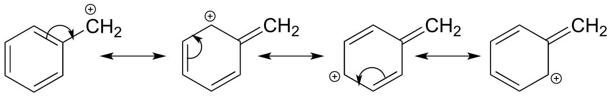
fig 31
Exercise 8.9: Fill in the missing numbers in this statement: The conjugated p system in the benzylic carbocation above is composed of ______ p orbitals overlapping to share ______ π electrons.
Allylic carbocations, where the positively charged carbon is adjacent to a double bond, are stabilized by resonance delocalization of the posive charge.
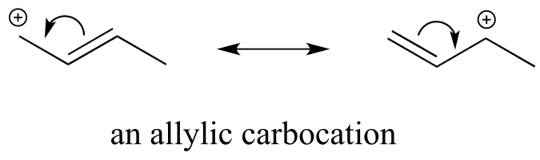
fig 32
Often, we must consider more than one factor when predicting carbocation stability. For example, the carbocation on the right in the figure below is more stable than the carbocation on the left. Both are allylic with the charge delocalized over two carbons, but on the more stable carbocation, one of the carbons is tertiary.

fig 32a
Because heteroatoms such as oxygen and nitrogen are more electronegative than carbon, you might expect that they would be carbocation-destabilizing electron withdrawing groups. In fact, the opposite is often true: if the oxygen or nitrogen atom is in the right position, the overall effect can be carbocation stabilization. Although these heteroatoms are indeed electron withdrawing groups by induction, they can be electron donating groups by resonance, and, as we learned earlier (section 7.3) in the context of acid-base chemistry, resonance effects are in general more powerful than inductive effects when the two operate in opposite directions.
Consider the two pairs of carbocation species below:

fig 33
In the more stable carbocations, the heteroatom acts as an electron donating group by resonance: in effect, the lone pair on the heteroatom is available to delocalize the positive charge. Note also that every atom in the major resonance contributor has a complete octet of valence electrons.
Exercise 8.10: rank the following carbocations from most to least stable:
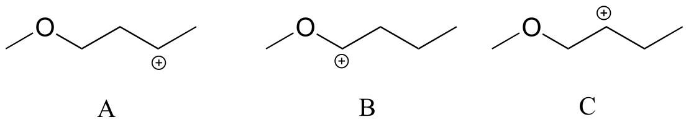
fig 33a
Finally, vinylic carbocations, in which the positive charge resides on a double-bonded carbon, are highly unstable.

fig 34
Exercise 8.11: Explain why vinylic carbocations are unstable. (Hint: think about hybridization and electronegativity)
Exercise 8.12: The carbocation below is an intermediate species in a reaction that is part of the biosynthesis of a hallucinogenic compound in a fungus. Draw a resonance contributor that shows how it is stabilized by resonance with the nitrogen atom.

fig 35
For the most part, carbocations - even ‘relatively stable’ carbocations such as those that are tertiary and/or benzylic - are still highly reactive, transient intermediate species in organic reactions, which briefly form and then react again right away. However, there are some unusual examples of carbocation species that are so stable that they can be put in a jar and stored on the shelf as a salt. Crystal violet is the common name for the chloride salt of the carbocation whose structure is shown below. Notice the structural possibilities for extensive resonance delocalization of the positive charge, and the presence of three electron-donating amine groups.
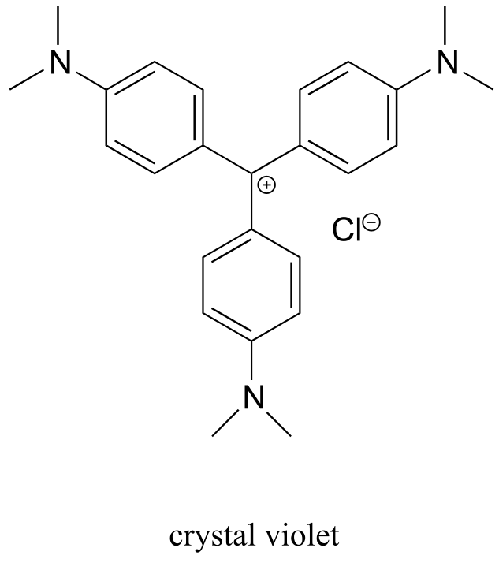
fig 36
Exercise 8.13:
a) Draw a resonance structure of the crystal violet cation in which the positive charge is delocalized to one of the nitrogen atoms.
b) Notice that crystal violet is deeply colored. Explain why you could have predicted this from looking at its chemical structure.
c) The conjugated system of crystal violet consists of how many overlapping p orbitals sharing how many π electrons?
Summary of factors influencing carbocation stability:
I: More substituted carbocations are more stable than less substituted carbocation (eg. tertiary carbocations are more stable than secondary carbocations).
II: Nearby electronegative atoms can decrease carbocation stability by the inductive effect.
III: Allylic and benzylic carbocations are stabilized by resonance delocalization of the positive charge .
IV: Delocalization of the positive charge by resonance with the lone pair electrons on a heteroatom contributes to carbocation stability.
Below are three examples illustrating how we can make predictions about relative carbocation stability:
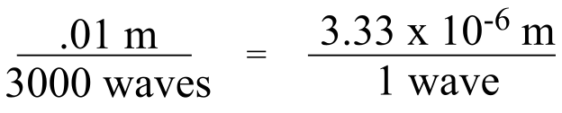


fig 36a
Exercise 8.14: State which carbocation in each pair below is more stable, or if they are expected to be approximately equal. Explain your reasoning.

fig 37
Now, back to our discussion of the electrophile in an SN1 reaction:
An SN1 reaction requires a stabilized carbocation intermediate. The more stable the relevant carbocation intermediate, the more favored the SN1 reaction pathway.
SN1 reactions in general do not occur at methyl or primary carbon electrophiles: the carbocation intermediates involved would be too unstable and the rate-determining (carbocation-generating) step would have a very high energy barrier. Substitution on these electrophiles will occur through the SN2 pathway.
The SN1 reaction pathway is possible, however, with secondary and tertiary carbon electrophiles, or with any other carbon electrophile in which departure of the leaving group generates a carbocation which is stabilized by resonance.
For example: a primary alkyl bromide would not be expected to undergo nucleophilic substitution by the SN1 pathway. An allylic primary alkyl bromide, on the other hand, would generate a relatively stable allylic carbocation and thus the SN1 pathway is possible.
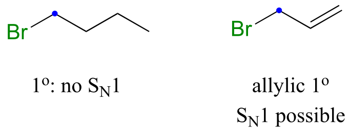
fig 37b
An allylic secondary alkyl bromide would undergo SN1 substitution more rapidly than the allylic primary alkyl bromide, because the relevant carbocation is more substituted and thus more stable.

sp2-hybridized carbons
Nucleophilic substitution generally does not occur at sp2-hybridized carbons, either by the SN2 or SN1 pathway.

fig 6
Bonds on sp2-hybridized carbons are inherently shorter and stronger than bonds on sp3-hybridized carbons, meaning that it is harder to break the bond between an sp2 carbon and a potential leaving group (such as the chlorine atom in the figure above). In addition, steric considerations play a part here: in order to attack from behind the leaving group in an SN2-like fashion, the nucleophile would need to approach in the plane of the carbon-carbon double bond.
Substitution by an SN1 pathway is equally unlikely because of the inherent instability of a vinylic (double-bonded) carbocation.
Section 8.4: Leaving groups#
Next, we investigate what makes a good leaving group. It’s really quite straightforward: everything that we learned in chapter 7 about evaluating base strength will apply to leaving groups:
Weaker bases are better leaving groups.
In our general discussion of nucleophilic substitution reactions, we have until now been using chloride ion as our common leaving group. Alkyl chlorides are indeed common reactants in laboratory nucleophilic substitution reactions, as are alkyl bromides and alkyl iodides. Iodide, which is the least basic of the four common halides (F, Cl, Br, and I), is the best leaving group among them. Fluoride is the least effective leaving group among the halides, because fluoride anion is the most basic. This rule applies to both SN2 and SN1 reactions, because in both cases the rate-determining step involves loss of the leaving group.
best leaving group I- > Br- > Cl- > F- worst leaving group
This trend is evident when you compare the relative rates of SN2 reactions of four halomethanes with a common nucleophile and solvent: iodomethane reacts fastest, fluoromethane the slowest.
fastest SN2 reaction CH3I > CH3Br > CH3Cl > CH3F slowest SN2 reaction
The conjugate base of toluenesulfonic acid is a leaving group commonly used in the organic synthesis laboratory. Toluenesulfonic acid is a strong organic acid with a pKa of -2.8, so its conjugate base is a weak base and excellent leaving group.
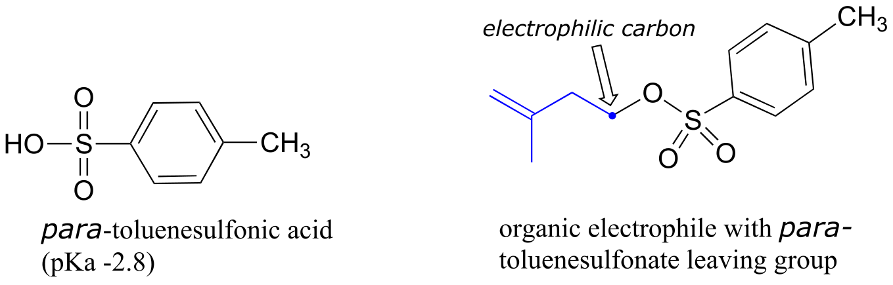
fig 6a
Exercise 8.15: In each pair (A and B) below, which electrophile would be expected to react more rapidly with cyanide ion nucleophile in acetone solvent? Explain your reasoning.

fig 25
Beginning later in this chapter and throughout the rest of our study of organic reactivity, we will see examples of leaving group ‘activation’: in other words, conversion of a strong base/poor leaving group into a weak base/good leaving group. In some cases this is as simple as protonation: an acidic group may be positioned in the active site in order to protonate a poor leaving group (eg. hydroxide ion in the case of an alcohol) as it leaves, thus converting it into a weak base and good leaving group. In many other enzymatic reactions, alcohols are converted into phosphates, which can be excellent biochemical leaving groups. We will learn much more about the structure and reactions of organic phosphate compounds in chapter 9.
Section 8.5: Regiochemistry of SN1 reactions with allylic electrophiles#
SN1 reactions with allylic electrophiles can often lead to more than one possible regiochemical outcome - resonance delocalization of the carbocation intermediate means that more than one carbon is electrophilic. For example, hydrolysis of this allylic alkyl bromide leads to a mixture of primary and secondary allylic alcohols.
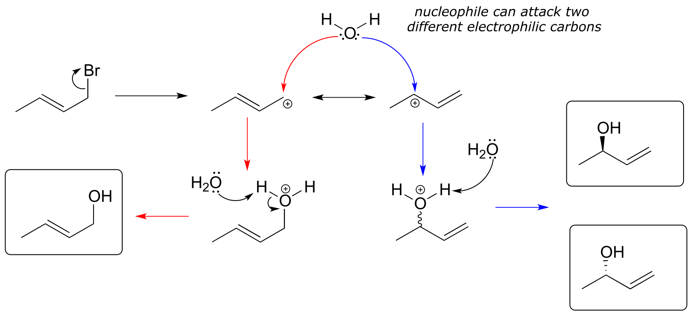
fig 37a
In an enzyme-catalyzed reaction of this kind, however, generally only one product will form, because enzymes maintain strict control over the regiochemistry and stereochemistry of the reactions they catalyze. The nucleophilic and electrophilic substrates are bound specifically in the active site so that nucleophilic attack is directed at one - and only one - electrophilic carbon. Problem 15, 17, and 19 at the end of this chapter provide some examples of regio- and stereospecific biochemical substitution reactions at allylic carbon electrophiles.
Section 8.6: SN1 or SN2? Predicting the mechanism#
First of all, it is important to understand that the SN1 and SN2 mechanism models are just that: models. While many nucleophilic substitution reactions can be described as proceeding through ‘pure’ SN1 or SN2 pathways, other reactions - in particular some important biochemical reactions we’ll see later - lie somewhere in the continuum between the SN1 and the SN2 model (more on this later). With that being said, here are some guidelines to help you predict whether a reaction is likely to have more of an SN1 or SN2 character.
First, look at the electrophile: as stated above, an SN1 reaction requires that a relatively stable carbocation intermediate be able to form. An SN2 reaction requires a relatively unhindered electrophilic center. Therefore, methyl and primary carbon electrophiles will react by the SN2 pathway, and tertiary carbon electrophiles will react by the SN1 pathway.
Secondary carbon electrophiles, or primary carbon electrophiles adjacent to a potential carbocation-stabilizing group (double bond or heteroatom) can react by either or both pathways. The reasoning here is that these electrophiles are unhindered (favoring SN2), but can also form stabilized carbocation intermediates (favoring SN1)
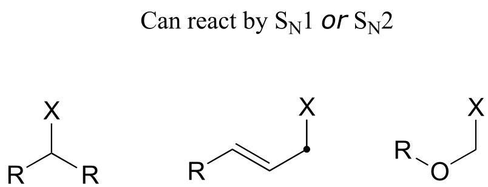fig 37g
Next, look at the nucleophile. More powerful nucleophiles, particularly anionic nucleophiles such as hydroxides, alkoxides or thiolates, favor an SN2 pathway: picture the powerful nucleophile ‘pushing’ the leaving group off the electrophile. Weaker, uncharged nucleophiles like water, alcohols, and amines, favor the SN1 pathway: they are not nucleophilic enough to displace the leaving group, but will readily attack a carbocation intermediate.
Finally look at the solvent in the reaction. As a general rule, water and other protic solvents (for example methanol or ethanol) favor SN1 pathways, due to the ability of the solvents to stabilize carbocation intermediates, combined with their tendency to weaken the nucleophile by enclosing it in a ‘solvent cage’. In laboratory reactions, the presence of a polar aprotic solvent such as acetone or dimethylformamide points to the probability of an SN2 reaction.
Factors favoring the SN1 pathway:
hindered electrophile
potential for a tertiary, secondary, or resonance-stabilized carbocation intermediate
uncharged nucleophile
protic solvent such as water
**Factors favoring the SN2 pathway:
**
Unhindered (methyl or primary) electrophile
powerful, anionic nucleophile
polar aprotic solvent
Section 8.7: Biological nucleophilic substitution reactions#
The nucleophilic substitution reactions we have seen so far have all been laboratory reactions, rather than biochemical ones. Now, finally, let’s take a look at a few examples of nucleophilic substitutions in a biological context. All of the principles we have learned so far still apply to these biochemical reactions, but in addition we need to consider the roles of the enzyme catalysts.
A word of encouragement:
This is the first time that we will be seeing ‘real’ biological organic reaction mechanisms. Do not be intimidated by the size and complexity of the reacting biomolecules - they are just organic molecules, with the same bonding patterns and functional groups that you are already familiar with. Focus on the reacting parts of the molecule: what is the nucleophile? The electrophile? The leaving group? In most biological organic reactions, the main bulk of the biomolecule is just ‘going along for the ride’, and can often be abbreviated with an ‘R group’ (section 1.2C) to simplify the picture.
8.7A: A biochemical SN2 reaction
One very important class of nucleophilic substitution reactions in biochemistry are the SN2 reactions catalyzed by S-adenosyl methionine (SAM) – dependent methyltransferase enzymes. SAM is a coenzyme (section 6.3) that plays the role of methyl group donor: you can think of SAM in this context as being simply a methyl carbon electrophile attached to a sulfide leaving group.

fig42
There are many variations of SAM-dependent methylation reactions in nature. In the introduction to this chapter, we were introduced to a reaction occurring in bacterial DNA in which a methyl carbon is transferred from SAM to a nitrogen atom on adenine (this type of reaction is often referred to as N-methylation).
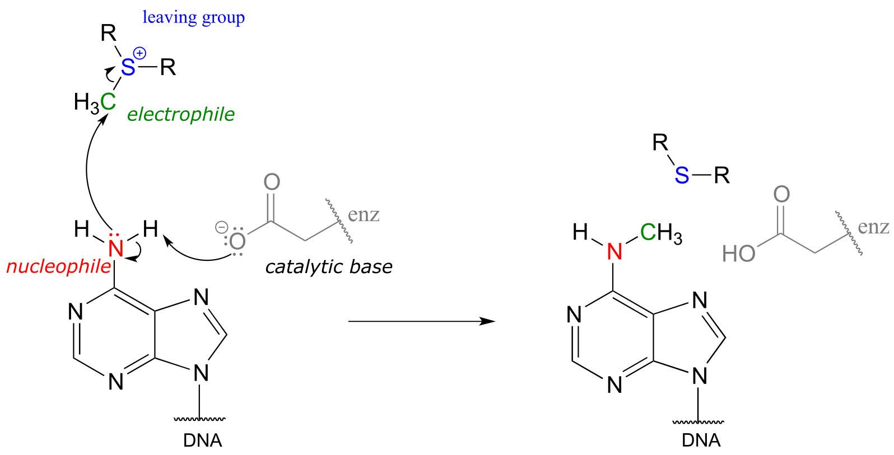
fig 43(Nucleic Acids Res. 2000, 28, 3950).
In the figure above, we are showing how an aspartate residue in the active site of the enzyme acts as a catalytic base: transfer of a proton from substrate to the aspartate side chain begins to enhance the nucleophilicity of the amine nitrogen as it approaches the electrophilic methyl carbon of SAM, and formation of the new N-C bond and cleavage of the C-S bond begins. These four bond-rearranging events probably take place in concerted fashion. A likely transition state is approximated below:

fig 43a
Of course, there are many other noncovalent interactions between active site enzyme residues and the substrate (the adenine base) and cofactor (SAM), but in the interest of clarity these are not shown. These interactions, many of which are hydrogen-bonds, help to position the adenine base and SAM in just the right relative orientation inside the active site for the nucleophilic attack to take place. (If you have access to American Chemical Society journals, a paper about an enzyme catalyzing a similar N-methylation reaction contains some detailed figures showing hydrogen-bond and charge-dipole interactions between the enzyme active site and the two substrates: see Biochemistry 2003, 42, 8394, figure 4).
The electrophile is a methyl carbon, so there is little steric hindrance to slow down the nucleophilic attack. The carbon is electrophilic (electron-poor) because it is bonded to a positively-charged sulfur, which is a powerful electron withdrawing group. The positive charge on the sulfur also makes it an excellent leaving group, because as it leaves, it becomes a neutral and very stable sulfide. All in all, we have a good nucleophile (enhanced by the catalytic base), an unhindered electrophile, and an excellent leaving group. We can confidently predict that this reaction is SN2. An SN1 mechanism is extremely unlikely: a methyl cation is very unstable and thus is not a reasonable intermediate to propose.
Notice something else about the SAM methylation mechanism illustrated in the previous figure. It is termolecular: there are three players acting in concert: the catalytic base, the nucleophile, and the electrophile. This is possible because the all three players are bound in a very specific geometry in the active site of the enzyme. In a reaction that takes place free in solution, rather than in an active site, the likelihood of three separate molecules colliding all at once, with just the right geometry for a reaction to take place, is very, very low. You should notice going forward that when we illustrate the mechanism of a reaction that takes place free in solution, we will only see bimolecular steps - two molecules colliding. Almost all of the biochemical reactions we see in this book will be enzyme-catalyzed - and termolecular steps will be common - while almost all of the laboratory reactions we see will take place free in solution, so we will only see unimolecular and bimolecular steps. (Synthetic chemists often employ non-biological catalysts that mimic enzyme active sites, but these examples are well beyond the scope of our discussion).
Exercise 8.16: Think back to the acid-base chapter: the pKa of a protonated ether is approximately zero, indicating that an ether is a very weak base. Considering periodic trends in acidity and basicity, what can you say about the relative basicity of a sulfide?
Another SAM-dependent methylation reaction is catalyzed by an enzyme called catechol-O-methyltransferase. The substrate here is epinephrine, also known as adrenaline, and the reaction is part of the pathway by which adrenaline is degraded in the body.
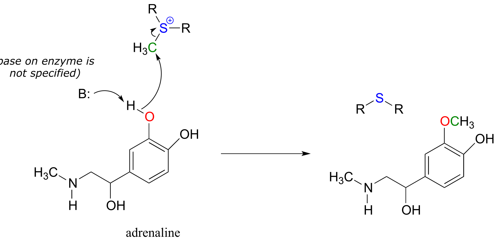
fig 44
Notice that in this example, the attacking nucleophile is a phenol oxygen rather than a nitrogen (that’s why the enzyme is called an O-methyltransferase). In many cases when drawing biochemical reaction mechanisms, we use the abbreviations B: for a catalytic base and H-A for a catalytic acid, in order to keep the drawings from getting too ‘busy’ (it’s also possible that the identity of the acidic or basic group may not be known).
Exercise 8.17: SAM is formed by a nucleophilic substitution reaction between methionine and adenosine triphosphate (ATP). Draw a mechanism for this reaction, and explain why you chose either an SN1 or and SN2 pathway.
8.7B: A biochemical SN1 reaction#
As we will see in chapter 10, enzyme-catalyzed SN1 reactions play a critical role in carbohydrate and DNA/RNA nucleotide metabolism. The reaction below is part of nucleotide biosynthesis:

fig 48
Notice a few things here: first, the diphosphate leaving group is stabilized by interactions with Mg+2 ion bound in the active site and also by hydrogen-bonding with active site amino acid residues (not shown). The carbocation intermediate is stabilized by resonance with the lone pairs on the oxygen (see section 8.5), and also by an active site aspartate side chain. The ammonia nucleophile is positioned in the active site so that it approaches from the ‘top’ side of the planar carbocation intermediate, and the substitution results in inversion of configuration. Remember: SN1 reactions which occur free in solution tend to result in a mixture of stereoisomers, but enzyme-catalyzed reactions - including enzymatic SN1 reactions such as this one - are generally stereo- and regio-specific, meaning that they almost always result in a single isomeric product, not a mixture of products.
Recall the statement from section 8.4 that poor leaving groups often need to be converted into good leaving groups. Backing up one metabolic step from the reaction depicted above, we see that a poor (hydroxide) leaving group on ribose-5-phosphate is first converted to a good (diphosphate) leaving group, which can stabilized through interactions with the active site of the enzyme catalyzing the SN1 reaction.
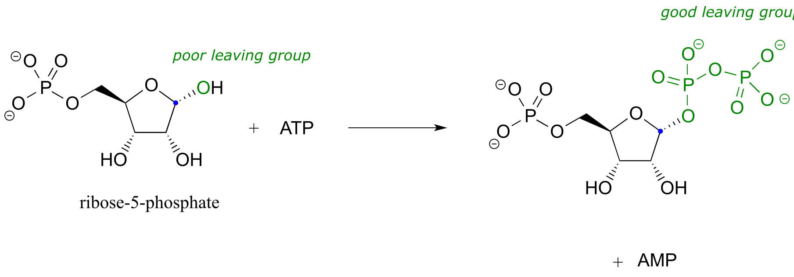fig 48b
This preliminary phosphorylation step, which requires ATP (adenosine triphosphate) as the donor of the diphosphate group, is a reaction that we will study in much more detail in chapter 9.
8.7C: A biochemical SN1/SN2 hybrid reaction#
The cysteine residues of certain proteins are modified by addition of a 15-carbon isoprene chain (section 1.3A) to the side chain thiol group.

fig 6
fig 46
The mechanistic details of this reaction are of particular interest to biomedical scientists. The proteins that are substrates for this type of modification are involved in cell signaling processes, and they are not able to carry out their biological functions unless they are anchored to a cell’s lipid membrane. The hydrocarbon group that becomes attached to a cysteine residue in this reaction serves as the anchor.

fig 47
Some of these proteins have been implicated in tumor formation. Scientists hope that if they can find a way to shut down the cysteine modification reaction, the tumor-causing proteins will not be able to anchor to cell membranes and thus will remain inactive. The search is on for an effective inhibitor of this enzyme to serve as a potential anti-tumor drug.
How does the enzyme lower the energy barrier for this reaction? Experimental evidence indicates that when a substrate protein is bound to the active site of the enzyme, the cysteine thiol associates with a zinc ion bound in the active site. As we learned in section 7.8, this association will lower the pKa of the thiol to the point where it loses a proton and exists as a thiolate anion in the active site - a thiolate is a very potent nucleophile! Studies also show that the diphosphate group forms stabilizing interactions with several amino acid residues (two lysines, an arginine, a histidine, and a tyrosine) in the enzyme’s active site, making it a weaker base and thus a better leaving group.
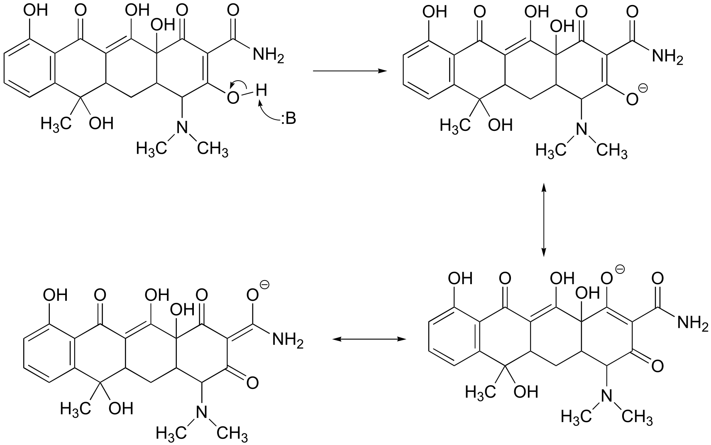
Biochemistry 1998, 37, 16601
fig 46a
Is protein prenylation an SN1 or SN2 reaction? In other words, to what extent does the nucleophile displace, or ‘push’ the leaving group off, or to what extent does the leaving group leave on its own, without a ‘push’ from the nucleophile? Along the same lines, to what extent does a positive charge develop on the carbon center (development of a full positive charge implies an SN1 mechanism). First, consider the electrophile: it is a primary allylic carbon, so either pathway is possible (it is relatively unhindered for SN2 attack, but could also form a resonance-stabilized carbocation intermediate in an SN1 pathway). The nucleophile is a very powerful thiolate ion, suggestive of an SN2 mechanism where a strong nucleophile actively displaces the leaving group.
In fact, experiments designed to address this very question (see problem P8.19) have provided evidence that the reaction is a mechanistic hybrid: essentially SN2, but with elements of SN1. In other words, at the transition state the electrophilic carbon takes on some degree of positive charge, but a true carbocation intermediate does not form. The take-home message here is that the SN1 and SN2 mechanistic pictures we have studied in this chapter are models, and while they are useful for learning about chemical principles and accurate for describing many substitution reactions, other reactions are not necessarily ‘pure’ SN1 or SN2, but actually lie somewhere in between.
Section 8.8: Nucleophilic substitution in the organic synthesis laboratory#
8.8A: The Williamson ether synthesis#
Synthetic organic chemists often make use of a reaction that is conceptually very similar to the SAM-dependent methylation reactions we saw earlier. The ‘Williamson ether synthesis’ is named for Alexander William Williamson, who developed the reaction in 1850.
In the Williamson ether synthesis, an alcohol is first deprotonated by a strong base, typically sodium hydride. An alkyl halide is then added to the reaction mixture, and the alkoxide ion, a powerful nucleophile, displaces the halide leaving group in an SN2 reaction.
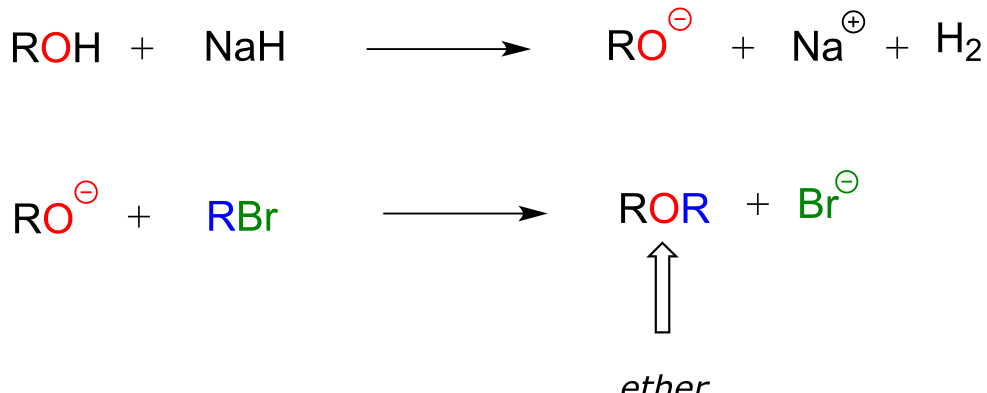
fig 48a
For example, below we see methyl bromide performing the role of methyl group donor, analogous to the role played by SAM in biochemical methylation reactions:

fig 49
Notice the difference between this non-biological laboratory reaction and the biological, enzyme-catalyzed SAM methylation reaction we saw earlier. Deprotonation of the nucleophile occurs as a separate step, before the nucleophile attacks. Contrast this solution reaction (with two bimolecular steps) to the enzyme-catalyzed SN2 reaction (SAM methylation) we saw earlier, which involves a single, concerted trimolecular step. Also notice that this non-biological reaction involves a highly basic reagent (sodium hydride) and intermediate (propanoate anion), which would be unreasonable to propose for a reaction taking place under physiological conditions.
The Williamson ether synthesis will only work with methyl or primary alkyl halides. If a secondary or tertiary alkyl halide is used, the result will be formation of an alkene in what is called an ‘elimination’ reaction:

fig 50
We will study elimination reactions in chapter 14.
Exercise 8.18: A rookie organic chemist ran the reaction shown above, hoping to synthesize an ether. Instead, he got the alkene shown. What alkyl halide/alcohol combination should he have used instead to get the ether product he was trying for?
8.8B: Turning a poor leaving group into a good one - tosylates
In section 8.4 it was mentioned how, in metabolic pathways, the relatively poor OH leaving group of an alcohol can be converted into a phosphate or diphosphate, which when stabilized by noncovalent interactions inside an enzyme active site can be a very good leaving group.
In laboratory synthesis, a similar goal can be accomplished by converting an alcohol (a poor leaving group)to an organic tosylate (a good leaving group) using tosyl chloride (the terms ‘tosylate’ and ‘OTs’, are abbreviations for para-toluene sulfonate). The alcohol to tosylate reaction is not something we are equipped yet to understand, but if we consider that the pKa of para-toluene sulfonic acid is -2.8, we realize that the para-toluene sulfonate anion is a very weak base and thus an very good leaving group. Conversion of alcohols to organic tosylates is a very common step in organic synthesis schemes.

fig 24
Key Concepts to Review#
Before you move on to the next chapter, you should be comfortable with the following concepts and skills:
Nucleophilic substitution basics:
Draw a complete mechanism for an SN2 reaction
Illustrate the transition state for an SN2 reaction
Understand how SN2 reactions result in inversion of configuration at the electrophilic carbon.
Draw a complete mechanism for an SN1 reaction, in particular a hydrolysis or other solvolysis SN1 reaction.
Draw an energy diagram illustrating the energy profile of a typical SN1 solvolysis reaction.
Illustrate all transition states that are part of an SN1 reaction.
Understand that non-enzymatic SN1 reactions result in both inversion and retention of configuration (racemization) at the electrophilic carbon. Enzymatic SN1 reactions are stereospecific, usually resulting in inversion at the electrophilic carbon.
Nucleophiles:
Understand the factors that influence nucleophilicity. Be able to evaluate the relative nucleophilicity of two or more compounds, and predict relative rates of SN2 reactions with different nucleophiles and a common electrophile.
Be able to recognize the nucleophile, electrophile, and leaving group in an SN1 or SN2 reaction.
Understand that – with the exception of the vertical periodic trend in protic solvents – in most cases anything that makes something a stronger base also makes it a more powerful nucleophile:
The horizontal periodic trend in nucleophilicity: for example, NH3 is a better nucleophile than H2O.
The vertical periodic trend in nucleophilicity for reactions in polar aprotic solvents: chloride ion is a better nucleophile than bromide ion in acetone solvent.
Protonation state: for example, hydroxide ion is a better nucleophile than water.
Inductive effect: electron-withdrawing groups decrease nucleophilicity
Resonance effects:
Delocalization of negative charge/electron density decreases nucleophilicity. For example, methoxide ion (CH3O-) is a stronger nucleophile than acetate ion.
In addition:
Steric effects: less sterically hindered nucleophiles are more powerful. For example, ethanol is less hindered and more nucleophilic than tert-butyl alcohol.
The vertical periodic trend in protic solvent (water or alcohol) is opposite the trend in basicity: for example, thiols are more nucleophilic than alcohols.
Electrophiles
Electrophiles are electron poor atoms: for our present purposes this means a carbon bonded to an electronegative atom.
Less hindered electrophiles will react faster in SN2 reactions: for example chloromethane is a better electrophile than a primary alkyl chloride.
Leaving groups
The trends in leaving groups parallel trends in basicity. A good leaving group is a weak base.
Common laboratory leaving groups are halides and para-toluenesulfonate (abbreviated tosyl, or OTs).
Common biochemical leaving groups are phosphates and sulfide.
Carbocation stability
Understand that, in general, factors which destabilize a negative charge will stabilize a positive charge.
More substituted carbocations are more stable: for example, a tertiary carbocation is more stable than a secondary carbocation.
Allylic and benzylic carbocations, in which the positive charge is delocalized by resonance, are relatively stable.
The presence of electron-withdrawing groups (by inductive or resonance effects) decreases carbocation stability.
The presence of electron-donating groups (by inductive or resonance effects) increases carbocation stability.
The presence of a heteroatom can stabilize a nearby carbocation by the resonance-based electron donating effect. Otherwise, heteroatoms act as weakly electron withdrawing carbocation-destabilizing groups by inductive effects.
General concepts and skills
Be able to predict whether a given substitution reaction is likely to proceed by SN2 or SN1 mechanisms, based on the identity of the nucleophile, the electrophile, and the solvent.
SN2 reactions involve strong nucleophiles and unhindered electophiles, and are accelerated by the use of polar, aprotic solvents.
SN1 reactions involve weaker nucleophiles relatively stable carbocations, and are accelerated by protic solvents.
Given a nucleophile and electrophile, be able to predict the product(s) of a nonenzymatic substitution reaction, and predict a mechanisms (SN1 or SN2). Be able to predict different regiochemical and stereochemical outcomes leading to formation of more than one product.
Be able to ‘think backwards’ to show the starting compounds in a substitution reaction, given a product or products.
Be able to recognize and draw a complete mechanism for a biochemical nucleophilic substitution reaction. Be able to evaluate the nucleophile, electrophile, and leaving group in the reaction, and predict whether the reaction is likely to have more SN2 or SN1 character.
Understand how S-adenosylmethionine (SAM) acts as a methyl group donor in biochemical SN2 reactions.
Be able to select appropriate alkyl halide and alcohol starting compounds to synthesize a given ether product, using the Williamson ether synthesis procedure.
Problems#
P8.1: Rank the following molecules in order of how fast they would be expected to react with CH3SNa in acetone. (CH3SNa is simply the sodium salt of CH3S-. Na+ is a spectator ion.)

P8.2: Draw line structures representing the most stable cation with the given molecular formula:
a) C3H7+ b) C4H9+ c) C3H8N+ d) C4H7+
P8.3: For each pair of carbocations below, choose the one that is more stable, and explain your reasoning.
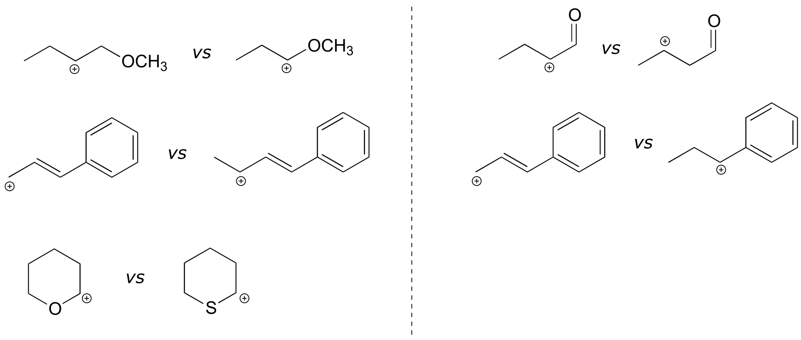**
**
P8.4: Arrange the following species in order of increasing nucleophilicity in protic solvent:
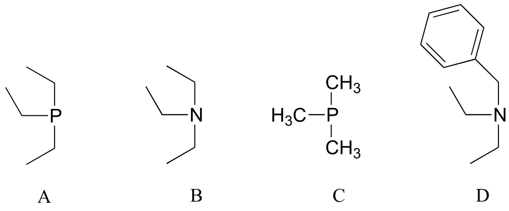
P8.5: Predict the organic products of the following nucleophilic substitution reactions, all of which are carried out in polar aprotic solvent. Show stereochemistry at chiral carbons. Hints: Na2CO3, sodium carbonate, is a weak base. For part (f): What is the conjugate acid of NH2-? What is the pKa of this conjugate acid, and what is the pKa of a terminal alkyne?


P8.6: Which of the reactions in the previous problem has a unimolecular rate determining step? Explain.
P8.7: From the following pairs, select the compound that would react more rapidly with bromomethane in acetone solvent.
a) water or hydroxide ion
b) CH3S- or CH3OH
c) CH2S- or CH3SH
d) acetate ion or hydroxide ion
e) diethyl sulfide or diethyl ether
f) dimethylamine or diethylether
g) trimethylamine or 2,2-dimethylpropane
P8.8: Methyl iodide (0.10 mole) is added to a solution that contains 0.10 mole NaOCH3 and 0.10 mole NaSCH3.
a) Predict the most abundant neutral organic product that would form, and explain your reasoning.
b) Assume that you isolate a mixture the major product (which you predicted in part) along with a smaller amount of a different nucleophilic substitution product. Explain briefly but specifically how you could use 1H-NMR to determine the ratio of the two products in the mixture.
P8.9: For each pair of compounds, predict which will more rapidly undergo solvolysis in methanol solution.

P8.10: Predict the solvolysis product(s) of each of the reactions below. Consider both regiochemistry and stereochemistry.
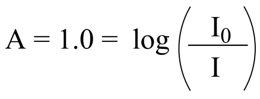
e) Draw a complete curved-arrow mechanism for the formation of the secondary allylilc alcohol product in part (a).
P8.11: Show starting compounds that would lead to the following products through nucleophilic substitution reactions.
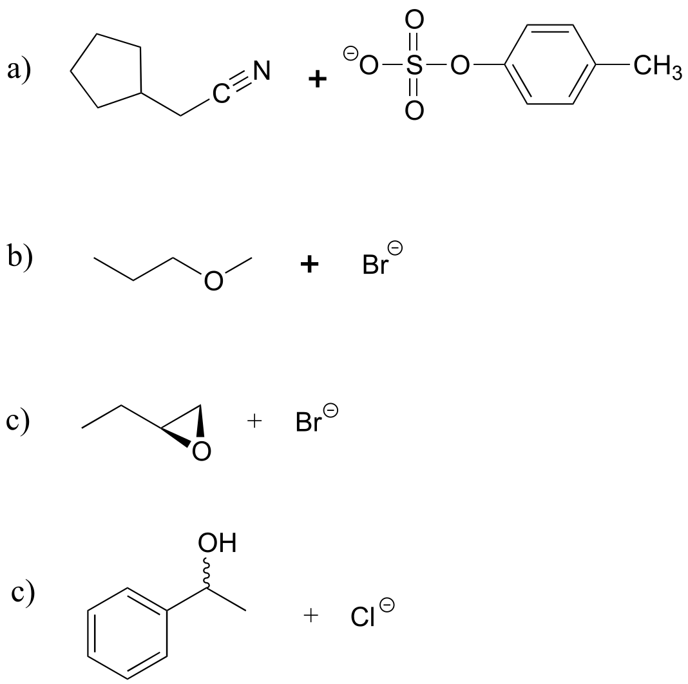
P8.12: The fused ring compound shown below is very unreactive to nucleophilic substitution, even with a powerful nucleophile.. Explain. (Hint – consider bond geometry - a model will be very helpful!)

P8.13 Laboratory synthesis of isopentenyl diphosphate - the ‘building block’ molecule used by nature for the construction of isoprenoid molecules (section 1.3A) - was accomplished by first converting isopentenyl alcohol into an alkyl tosylate then displacing the tosylate group with an inorganic pyrophosphate nucleophile. Based on this verbal description, draw a mechanism for the second (nucleophilic substitution) step, showing starting and ending compounds for the step and curved arrows for electron movement. (J. Org. Chem 1986, 51, 4768).
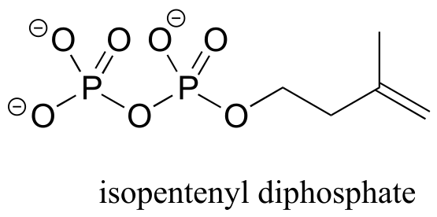
P8.14: Choline, an important neutotransmitter in the nervous system, is formed from 2-(N,N-dimethylamino)ethanol:
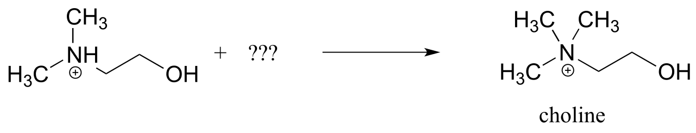
a) Besides the enzyme and the starting compound, what other important biomolecule do you expect plays a part in the reaction?
b) Draw a mechanism for the reaction.
c) Briefly explain how 1H-NMR could be used to distinguish between the substrate and the product of this reaction.
P8.15 The following is a reaction in the biosynthesis of morphine in opium poppies. (Science 1967, 155, 170; J. Biol. Chem 1995, 270, 31091).

a)Draw a complete mechanism, assuming an SN1 pathway.
b) What would you expect to be the most noticeable difference between the IR spectrum of the product and that of the substrate?
c) This reaction is an example of the regiospecificity of enzymatic nucleophilic substitution reactions noted earlier in the chapter. Draw two alternate nucleophilic, ring-closing steps for this reaction (leading to different products from what is shown above), and explain why these alternate pathways are both less favorable than the actual reaction catalyzed by the enzyme.
P8.16: The enzymatic reaction below, which is part of the metabolism of nucleic acids, proceeds by an SN1 mechanism. The new bond formed in the substitution is indicated.
a) Predict the structures of the two substrates A and B.
b) Draw a complete mechanism, and use resonance drawings to illustrate how both the carbocation intermediate and the leaving group are stabilized.

P8.17: Below is the first step of the reaction catalyzed by anthranilate synthase, an enzyme involved in biosynthesis of the amino acid tryptophan.
a) This reaction is somewhat unusual in that the leaving group is a hydroxide anion, which is of course is normally thought to be a very poor leaving group. However, studies show that an Mg+2 ion is bound in the active site close to the hydroxide. Explain how the presence of the magnesium ion contributes to the viability of hydroxide as a leaving group.
b) Draw a complete mechanism for the reaction, assuming an SN1 pathway.

P8.18: The reaction below is part of the biosynthesis of peptidoglycan, a major component of bacterial cell walls. Is it likely to proceed by a nucleophilic substitution mechanism? Explain.

P8.19: Compare the reaction below, catalyzed by the enzyme AMP-DMAPP transferase, to the protein prenyltransferase reaction we learned about in section 8.8C, the mechanism of which, as we discussed, is thought to be mostly SN2-like with some SN1-like character.
a) Is the AMP-DMAPP transferase reaction below likely to have more or less SN1-like character compared to the protein prenyltransferase reaction? Explain.
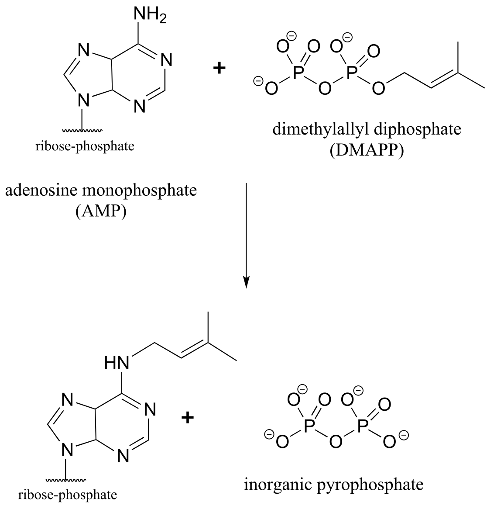
b) Given your answer to part (a), which reaction is likely to be more dramatically slowed down when a fluorinated isoprenoid substrate analog is substituted for the natural substrate? Explain.
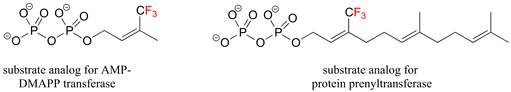
P8.20: In a classic experiment in physical organic chemistry, (R)-2-iodooctane was allowed to react (non-enzymatically) with a radioactive isotope of iodide ion, and the researchers monitored how fast the radioactive iodide was incorporated into the alkane (the rate constant of incorporation, k*i* ) and also how fast optical activity was lost (the rate constant of racemization, k*r*). They found that the rate of racemization was, within experimental error, equal to twice the rate of incorporation. Discuss the significance of this result - what does it say about the actual mechanism of the reaction?